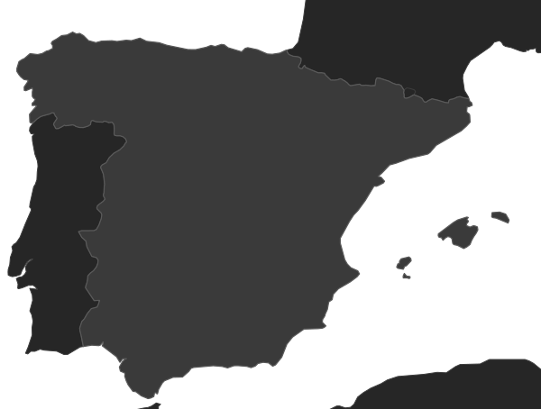

Calendario Carrion Birds
Temporada 2026-2027
En este Calendario Carrion Birds compartimos las competiciones de la temporada, señalamos a las que asistiremos y nuestros resultados. ¡Nos vemos en la competición! 🦅🦅🦅
Nuestro mes
El camino de la flecha

Próximas competiciones
Tipo
Federación
No hay próximas competiciones con estos filtros.
Competiciones pasadas
Todavía no hay competiciones pasadas con estos filtros.